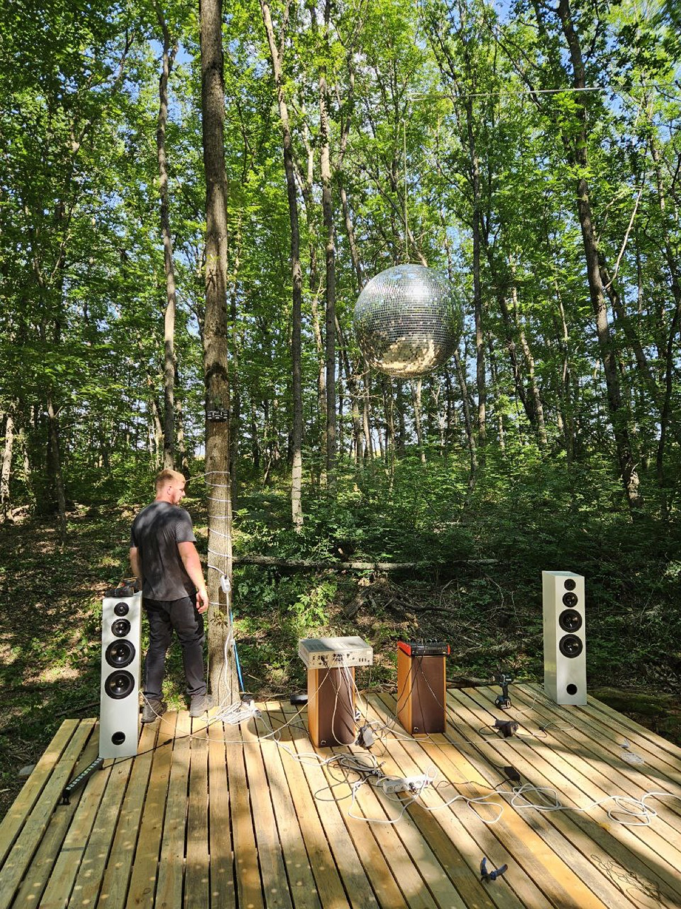
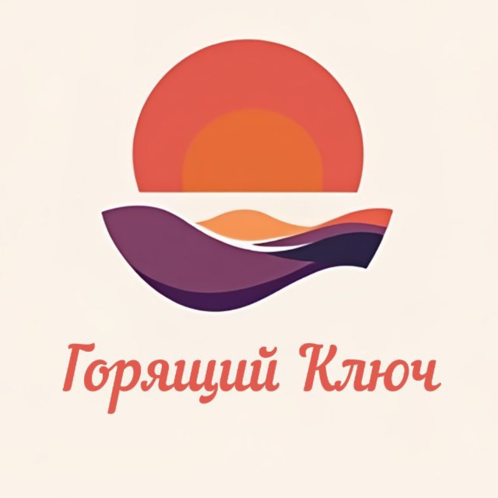
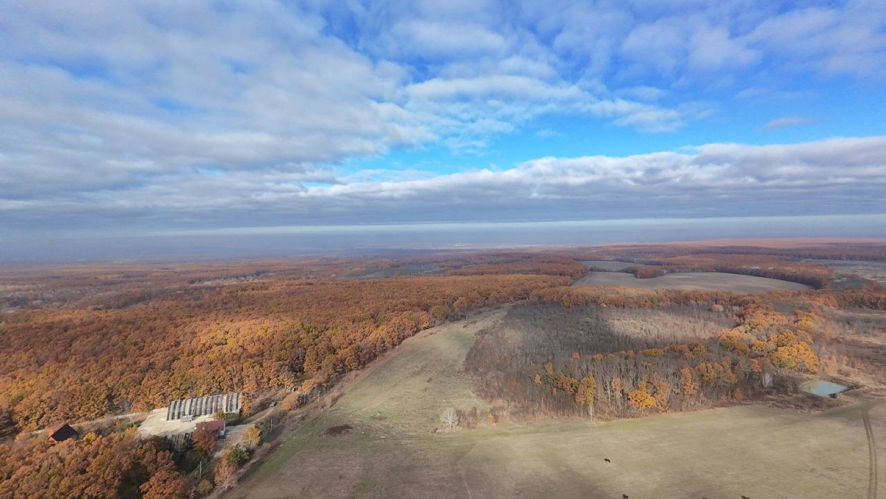
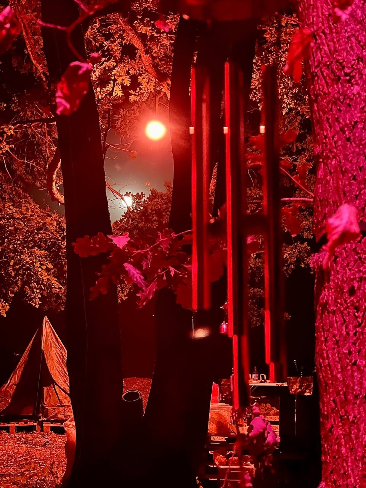

Творческое объединение внутренний документ · не для цитирования
черновик v0.4
Горящий Ключ
Промежуточный отчёт о состоянии проекта, составленный по материалам чата и созвонов
Лаборатория продуктивного фантазирования · июль 2026
аудитория: внутренний круг (n = 5) · день — с первого сообщения
Аннотация
Настоящий отчёт фиксирует состояние проекта «Горящий Ключ»: пятеро инженеров, поляна на краю леса и растущий набор фантазий, доведённых до состояния «построено». За отчётный период (март 2025 — июль 2026) проведено два полевых сезона, возведена сцена, учреждён музей, написан один манифест и накоплен словарь, который пополняется быстрее, чем его успевают записывать.
Документ собран из первичных источников — 1411 сообщений чата и записей созвонов. Ничего не досочинено. Посторонним будет непонятно; так и задумано.
Ключевые слова: продуктивное фантазирование · системно кайфовать · жар жизни · фотонная баня Савчука · музей Горящего Ключа · синхрон
1.Постановка задачи
Исходное положение: у каждого в голове живёт штука с пометкой «просто помечтать». Задача объединения — менять пометку на «можно сделать» и доводить до построенного. Рабочий термин для этой операции — продуктивное фантазирование; операция проверена на сцене в ночном лесу, которая годами была фантазией, а теперь на ней танцуют.
Отдельная проблема, которую решает проект: существует класс разговоров и переживаний, для которых не подходит ни работа, ни город, ни мессенджер. Для них нужна своя территория — физическая и человеческая. Территория есть. Отчёт описывает, что на ней уже стоит.
пометка на полях: парадная версия манифеста существует отдельно и ходит по кругу; здесь — рабочая редакция, без парадности.
2.Хронология наблюдений
Даты — по чату. Пункты со значком ⌁ раскрываются: внутри первоисточники.
2025 · сезоны первый и второй
29.03.2025Появился чат. Имя проекта возникло через две минуты после первого сообщения.первоисточник
«Собственно, предлагаю так и назвать то, что мы начнём создавать летом) <…> Может выйдет ежегодный фестиваль)) <…> Деревня какая нибудь))»— Димон, день первый
30.03.2025Решён главный вопрос айдентики: ключ должен гореть лезвием, а не ручкой. Витя уже прикидывает место под шестиметровый костёр.первоисточник
«Еще можно перевернуть ключ, чтоб горела не ручка, а само лезвие)»— Макс
04.04.2025Куплены билеты. Точка невозврата пройдена на седьмой день проекта.первоисточник
«Билеты взяли! 3го июля будем в Горящем Ключе)»— Макс
02.05.2025Сформулирован концепт «Место. Между мирами» — зона на границе леса и поля, где у входа оставляют телефон.
08.06.2025Спроектирована кухня-бар «Граница вкусов» с ритуалами: «завтрак молчания», «суп без рецепта», «хоровая нарезка фруктов».первоисточник
«Хоровая нарезка фруктов - это заебись 😂»— Санёк
03–11.07.2025Фестиваль № 1. Построен своими руками, на своей земле, для своих. Гипотеза «мы можем это сделать» подтверждена экспериментально.первоисточник
«вечная туса!) хорошо в ночи выглядят нитки, кайф!»— Макс, с поля
13.07.2025Следующий концепт начат до возвращения домой с предыдущего фестиваля. Установлен рекорд времени восстановления творческого импульса: отрицательная величина.первоисточник
«Ну всё, хули. Начал ебашить следующий концепт. Не успел до дому даже добраться)»— Димон
14.07.2025Написан манифест «Жар Жизни» — философское ядро проекта, оформленное как правила зоны шашлыка.первоисточник
«1. Жарь как будто ты молишься. 2. Смейся как будто ты просветлён. 3. Не забывай — всё сгорит.»— из манифеста «Жар Жизни»
15.07.2025Учреждён музей Горящего Ключа. Первые экспонаты определились сами.первоисточник
«Дааа уж! Это войдет в экспонаты музея Горящего Ключа)»— Санёк
11.08.2025Составлена программа второго фестиваля из тринадцати пунктов; в тот же день предложен темаскаль — «баня мексиканских индейцев».первоисточник
«Ебать программа!»— Димон, рецензия на программу
18–21.09.2025Фестиваль № 2 «Урожай». Чайная под таинственным дубом, пленэр, фолк и диджеи, баня дикарей, проводы лета у кострища.
16.10.2025Ретроспектива года. Главный вывод: камерность важнее масштаба.первоисточник
«Нам нужно устроить пати в узком кругу единомышленников как в первый раз»— Санёк; двое плюсуют
2026 · сезон третий, «год доделки»
24.01.2026На поле обнаружен ветрогенератор. Классифицирован как «интрига на будущий фест».первоисточник
«Пиздец, конечно, синергия. И арт и энергия и точка притяжения разных людей»— Димон, экспертное заключение
«Нет ни у кого внутреннего необоснованного ощущения, что пора повторить?)» — «Есть. Я даже из Азии прилетел вчера, чтоб поближе к повторению быть))»— Андрюха; Димон
25.06.2026Выбор дат сезона ведётся по четырём календарям одновременно. Методологический спор не разрешён.первоисточник
«Мне чудится или вы реально по гороскопу выбираете даты? 😂» — «Ну можно еще таро разложить)»— Макс; Андрюха
23.07.2026Созвон о «зачем»: полтора часа по кругу, пять ответов, совпавших сильнее ожидаемого, ни одного спора. Итоги — в разделе 3.
26.07.2026Начата систематическая фиксация культурного кода: словарь, база артефактов, репозиторий. Этот отчёт — часть процесса.первоисточник
«проявляю наш культурный код, будем иметь базу артефактов и из них культуру проявлять системно, без хуйни»— Димон
06.08.2026Запланирован созвон: формат, численность, даты. Каждый приносит два-три окна в календаре.
3.Принципы (рабочая редакция)
Сведены по материалам созвона 23.07.2026 и чата. Формулировки рабочие; парадные — в манифесте.
Фантазии переводятся в реализуемое. Базовая операция проекта. Побочный эффект операции: энергия.
Строит и празднует один и тот же круг. Решено окончательно: кто строит, тот и тусует. Гостей-потребителей не предусмотрено конструкцией.
Далёкие миры сталкиваются намеренно. Физик разговаривает с музыкантом — посередине получается третье. Каждый приносит в дар то, в чём силён: лекцию, чай, свет, звук, расчёт нагрузок.
Маски сдаются на входе, рядом с телефонами. Место, где никому ничего не доказывают. Ради этой возможности всё и затевалось.
Баланс сводится по энергии. Критерий правильности события: сил после него больше, чем до. Мечтать и не делать — расход без прихода; делать и не доделывать — хуже вдвое.
Невыразимому оставлено место. Есть переживания, о которых не разговаривают, — их можно только разделить. Для них существует зона, где телефон остаётся у входа. В планах — событие вообще без слов.
Культура выращивается, а не назначается. Словарь, музей, врата и жесты завелись сами — там, где люди регулярно делают настоящее вместе. Задача проекта: замечать и фиксировать.
«Пока живо — жарим. Пока жарко — живём.»
формула ядра · манифест «Жар Жизни», 14.07.2025
4.Личный состав
Димон
генератор концептов
Философское ядро, ритуалы, чайные церемонии, тексты. Отвечает за то, чтобы у любого шашлыка была космология. Собрания открывает словом «Пацантре».
Макс
человек-структура
Планирование, таблицы закупок, сухая ирония вслед за пафосом. Автор термина «продуктивное фантазирование». На мероприятиях присутствует в составе себя.
Санёк
хозяин полевой базы · мотор
Земля, сцена, стройка, козы. Девиз земель: «Природа. Культура. Человек». Одобрение фиксирует по открытой шкале: от «Заебись» до «Заебись х2».
Андрюха
инженер-расчётчик
Нагрузки, тросы, купола, здоровый скепсис. В его честь названа баня, которая ещё не построена (см. раздел 5). Мораль: «нехуй ссать, кайфуй».
Витя
Атлас
Территория, крупные объекты, шестиметровый костёр. Самый вежливый участник чата: здоровается почти в каждом сообщении. «Принято.»
Вспомогательные подразделения
внештатно
Козы — «бензопила, триммер и мульчер в одной морде», прикомандированы к дому на дереве. Летучие мыши — противокомариная авиация. Нейросети — приглашённые консультанты без права голоса.
спроектирован: купол Ø 4 м, стеклопластиковая арматура, 150 м прутка
Дом на дереве
дерево выбрано; площадку расчищают козы (не метафора)
Фотонная баня Савчука
имя присвоено до начала строительства
Ветрогенератор
установлен на поле; официальный статус — «интрига»
Костёр, 6 м
место прикидывается с 30.03.2025; ожидает своего сезона
Словарь проекта
пополняется; избранное — в Приложении А
принято решение года: новых строек не начинать, начатое — доводить. Список выше с этим решением почти совместим.
6.Открытые вопросы
В-1Кто мы: кемп или маленький Бёрн?
Одна команда с общими проектами или площадка для нескольких команд. От ответа зависит весь масштаб. Вынесено на созвон 06.08.
В-2Сколько нас должно быть?
Десять — управляемо. Тридцать — предел инфраструктуры. Истина предположительно между.
В-3Когда едем в этом году?
Круг «когда» дважды не состоялся. Действующая методология планирования: «как пойдёт».
В-4Девиз
У объединения — отсутствует («Природа. Культура. Человек» — девиз земель, он остаётся за ними). Принято решение не сочинять: девизы такого рода не пишутся на созвонах — они вырываются у кого-то сами в правильный момент. Ведётся прослушивание эфира.
7.Фотофиксация

Рис. 1. Сцена, июль 2025. Из фантазии — в эксплуатацию.

Рис. 2. Символика. Обнаружена в чате в первый же день наблюдений.

Рис. 3. Полевая база. Вид с воздуха.

Рис. 4. Световой объект в режиме эксплуатации. Время съёмки — 02:31.